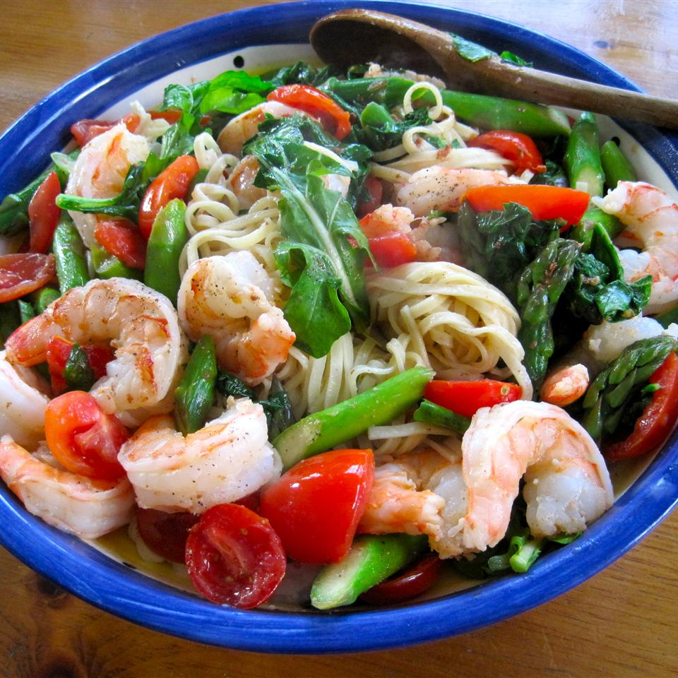

Pasta Recipe

Creamy Shrimp Pasta
Ingredients
- 1/2 package
- 3 tablespoons olive oil
- 1/3 cup chopped onions
- Fresh Onions
- 1 large clove garlic, minced
- 1/2 cup sliced fresh mushrooms
- 1/4 cup chopped red bell pepper
- 1 pound uncooked medium shrimp, peeled and deveined
- 1 splash white wine (Optional)
- 1 pinch dried oregano (Optional)
- 1/2 cup heavy cream, or to taste
- 3 tablespoons butter
- 1 tablespoon all-purpose flour (Optional)
- 1 pinch salt and ground black pepper to taste
- 1 tablespoon freshly grated Parmesan cheese, or to taste (Optional)
- 1 tablespoon chopped fresh basil, or to taste (Optional)
Steps
- Bring a large pot of lightly salted water to a boil. Cook spaghetti in the boiling water, stirring occasionally, until tender yet firm to the bite, about 12 minutes. Drain.
- Meanwhile, heat olive oil in a skillet over medium heat. Add onions and cook until soft and translucent, about 5 minutes. Add garlic and cook until fragrant, about 30 seconds. Stir in mushrooms and bell pepper; cook until bell pepper has softened and mushrooms are lightly browned, 3 to 5 minutes. Add shrimp, white wine, and oregano. Cook until shrimp are almost cooked through and turning pink, 3 to 5 minutes.
- Add cream and butter. Simmer, stirring constantly, for 8 minutes. Add cooked spaghetti, mix to combine, and turn off heat. If cream sauce is too thin, thicken with flour. Season with salt and pepper and sprinkle with Parmesan cheese and basil.